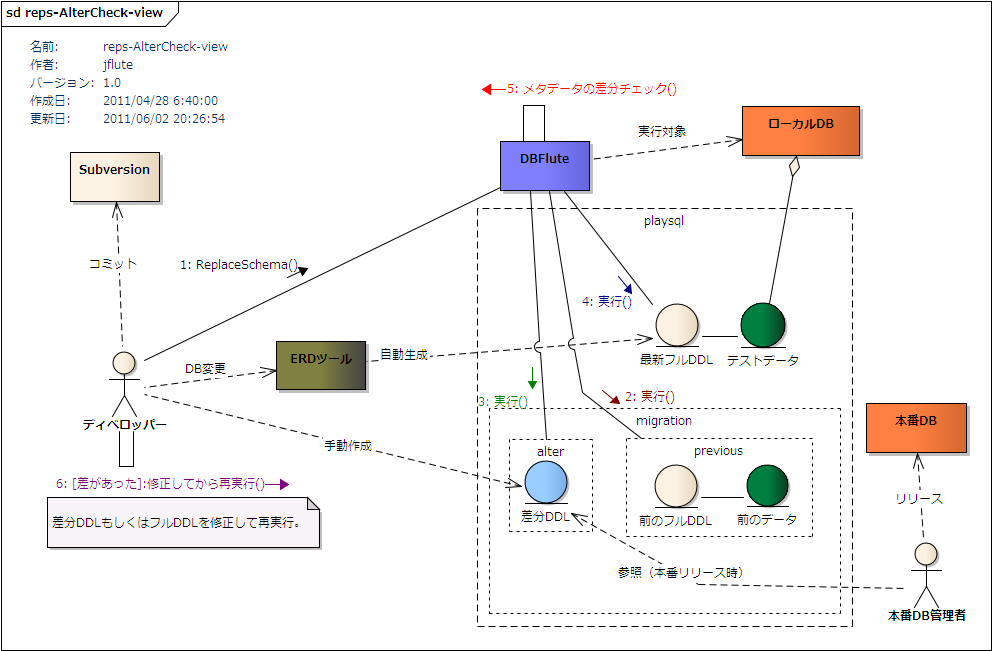

AlterCheck
概要
ReplaceSchema で差分DDLを検証する仕組みがあります(@since 0.9.8.4)。 AlterCheck と呼ばれるこの仕組みを利用してフルDDLと差分DDLをしっかりと整合性をとって運用していくことが推奨されます。
前のDB(Previous-DB) + 差分DDL(AlterDDL) = 最新のフルDDL(NextDDL)
前のDBに差分DDLを加えたものと、最新のフルDDLの実行結果は同じはずです。ReplaceSchema で前のDBの状態に戻して差分DDLを実行し、その後で最新のフルDDLで最新のDBを作って差分をチェックします。この課程を自動化します。
言葉の定義
- PreviousDDL
- 前の状態のスキーマをゼロから復元するためのフルDDL (+ データ)
- playsql/migration/previous 配下
- AlterDDL
- 本番に適用させる予定の前の状態のスキーマを最新にする差分DDL (+ スクリプト)
- playsql/migration/alter 配下
- NextDDL
- 最新の状態のスキーマをゼロから作成するフルDDL (+ データ)
- playsql 配下 ※いつもの場所、本線(メイン)のDDL
まずは、PreviousDDL を保存
DB変更する前の段階で、(今の)最新状態を PreviousDDL として保存するために ReplaceSchema。
- 1. PreviousDDL を保存
- 現在最新の playsql 直下のフルDDL(+ データ)をコピー保存
- 2. PreviousDDL をチェック
- 実際に、コピー保存したPreviousDDLで内部的に ReplaceSchema 処理を実行
この課程を忘れてしまったとしても、バージョン管理システムから PreviouSQL を取得して、所定の位置に手動で配置しても AlterCheck は利用できます。
そして、AlterCheck を実行
DB変更をしたあと(開発が落ち着いてDBが確定して)、AlterDDL を作成したら ReplaceSchema。
- 1. PreviousDDL を実行
- PreviousDDL を利用して内部的に ReplaceSchema を実行してスキーマを Previous-DB の状態に
- 2. AlterDDL を実行
- Previous-DB に AlterDDL を実行し、メタデータを保持
- 3. NextDDL を実行
- NextDDL を使って内部的に ReplaceSchema 処理を実行し、メタデータを取得
- 4. 二つの結果の差分を検証
- 二つのメタデータをチェックし、差があれば差分情報を出力してタスクを中断します。
AlterCheck概念図
図 : AlterCheck概念図 
{kind=link}
AlterCheck の利用方法
PreviousDDL を保存
まずは、(運用後の小さな、もしくは、それなりの規模の)開発が始まる前、DB変更が発生する前の最新の状態を復元できる DDL やデータをまるごと保存します。これが PreviousDDL となり、リリースするまでは本番DBと同じ構造を表現するリソースとなります。
playsql配下に migration というディレクトリを作成し、その直下に save-previous.dfmark という名前の空ファイルを作成して(中身は参照されません)、ReplaceSchema を実行します。 このマークファイルがあると ReplaceSchema が SavePrevious を行います。
e.g. save-previous.dfmark の作成 @playsql
dbflute_exampledb
|-playsql
|-data
|-migration
| |-save-previous.dfmark
すると、playsql 直下の DDL やデータがまるごと playsql/migration/previous 配下にコピー保存されます。その後、妥当性をチェックするために、その保存された PreviousDDL を使って内部的に ReplaceSchema が実行されます。正常に終了した場合は、migration 配下に previous-OK.dfmark (単に OK であることを強調するマーク)が作成されます。
e.g. PreviousDDL が正常に保存された場合 @playsql
dbflute_exampledb
|-playsql
|-data
|-migration
| |-previous
| |-data
| | |-...
| |-replace-schema-10-basic.sql
| |-replace-schema-20-view.sql
| |-...
| |-previous-OK.dfmark
逆に、保存した PreviousDDL がそもそもエラーになってしまうような場合は、previous-NG.dfmark が作成されます。再実行で SavePrevious が正常に終了したら自動的に削除されます。
万が一、開発前にこの課程を忘れてしまった場合でも、後でバージョン管理システムから直前のバージョンを取得して、 この課程をやり直しても AlterCheck は利用できます。また、この仕組みでなくても、要は migration/previous 配下に Previous-DB を復元できる DDL が手動でも配置されればOKです。
0.9.8.4 から 0.9.8.6 で保存先バグ
0.9.8.4, 0.9.8.5, 0.9.8.6 において、Windows環境において previous 直下ではなく、previous/playsql 配下に保存されてしまうというバグが報告されました。これは 0.9.8.7 以降では修正されています。
previous/playsql 配下に配置されてしまっている場合は、この後の AlterCheck が正常に動作しません。該当バージョンを利用している場合は、previous/playsql 配下のファイルを previous 直下に移動することで AlterCheck が利用できるようになります。
AlterCheck の実行
そして、DB変更した後、開発が落ち着いてDB構造も固まって AlterDDL を作成した(する)タイミングにて、現在の最新状態と Previous-DB + AlterDDL の整合性をチェックします。
playsql/migration配下に alter というディレクトリを作成し、そこに AlterDDL を配置します。alter-schema で始まる .sql のファイルが AlterDDL として認識されます。このディレクトリに AlterDDL が一つ以上あると ReplaceSchema が AlterCheck を行います。
e.g. AlterDDL の配置 @playsql
dbflute_exampledb
|-playsql
|-data
|-migration
| |-alter
| | |-alter-schema.sql
| |-previous
| |-...
まずは、この時点では AlterDDL の中身は空っぽでも構いません。Previous-DB に AlterDDL を実行した結果と、NextDDL で作成した結果に不整合(食い違い)がある場合は ReplaceSchema は中断され、 その差分が migration/schema 配下に alter-check-result.diffmap (map形式のテキストファイル) に出力されます。それを参考に、AlterDDL をトライアンドエラーで作成しても良いでしょう。
e.g. AlterDDL の配置 @playsql
dbflute_exampledb
|-playsql
|-data
|-migration
| |-alter
| | |-alter-schema.sql
| |-previous
| |-...
| |-schema
| |-alter-check-result.diffmap
この差分結果は、HistoryHTML で利用されているものと同様のものです。ここでは、"Previous-DB + AlterDDL" から "NextDDL" への差、ということで出力されます。例えば、テーブルが追加されている(ADD)とある場合、AlterDDL でそのテーブルを ADD するように修正、と解釈できます。
また、差分ルールは HistoryHTML の仕様と同じです。例えば、"カラム定義順序の違い" や "同じ構造で制約名だけの変更" など、基本的にアプリに影響のない微修正ものに関しては差として認識されません。
AlterDDL を修正しながら、結果が一致するまで ReplaceSchema を叩き続けます。一致したら、AlterDDL の妥当性がチェックされたということで、チェック済み AlterDDL として migration/history 配下に保存されます(alter 配下から移動します)。
タスク実行がエラーになったとき、原因が実行時エラーなのか、不整合なのか、または別のエラーなのか、コンソールやタスクログの 最後のログメッセージ(Final Message) でそれらを確認することができます。
ALterNGマーク
そもそも AlterDDL が文法的に間違っていて実行時にエラーとなった場合、および、不整合があって差分が発生した場合、 migration 配下に alter-NG.dfmark というファイルが作成されます。これは単に AlterDDL がダメだったよ、ということをおおげさに表現するマークファイルです。AlterCheck が成功したら自動的に削除されます。
e.g. AlterNGマーク @playsql
dbflute_exampledb
|-playsql
|-data
|-migration
| |-alter
| | |-alter-schema-10-basic.sql
| | |-alter-schema-20-view.sql
| |-alter-NG.dfmark
NextNGマーク
AlterCheck 実行時の最新状態、つまり playsql 直下のDDLやデータが文法的に間違っていて実行時にエラーとなる場合、 migration 配下に next-NG.dfmark というファイルが作成されます。これは単に NextDDL がダメだったよ、ということをおおげさに表現するマークファイルです。AlterCheck が成功したら自動的に削除されます。
e.g. NextNGマーク @playsql
dbflute_exampledb
|-playsql
|-data
|-migration
| |-alter
| | |-alter-schema-10-basic.sql
| | |-alter-schema-20-view.sql
| |-next-NG.dfmark
NGマークは NG の強調
そもそもNGマークの役割についてですが、単なる NG であることの強調という意味に尽きます。
しっかりとコンソールや dbflute.log でエラーメッセージを見てアクションを取って欲しいのですが、 あまりコンソールを見ずに(エラーに気付かずに)先に進んでしまうこともありえるので、おおげさにマークファイルを出力しています。
AlterDDL で外部スクリプト
AlterDDL において、SQLの実行だけでなく外部スクリプトを実行することができます。 DBへの差分反映は、単純なSQLで済まされない場合もあります。DBMSのコマンドを利用して特殊な操作をすることもあるでしょう。 そういう場合のために、外部スクリプトが実行できるようになっています。
AlterDDL のSQLファイルと同じディレクトリに、alter-schema で始まる拡張子が .bat もしくは .sh のスクリプトファイルを配置します。SQLファイルも含めてファイル名の昇順で実行されます。
e.g. AlterDDL の外部スクリプトの配置 @playsql
dbflute_exampledb
|-playsql
|-data
|-migration
| |-alter
| | |-alter-schema-10-basic.sql
| | |-alter-schema-20-view.sql
| | |-alter-schema-30-special.sh
スクリプトの exitCode が 0 以外の場合は、スクリプト実行エラーとみなされます。
スクリプトのコンソールログは、固定で UTF-8 として取得され、DBFluteタスクのログと一緒に出力されます。なので場合によっては、ログが文字化けする可能性はありますが、処理に影響はありません。
あえて AlterDDL はベタに
AlterDDL の実装方法として、SQLファイルと外部スクリプトというベタな方式に絞っているのは、本番環境への適用を考えてのことです。 本番環境のDBは、多くの場合開発者の手の届かないところにあります。 また、DBFluteを本番環境のDBが見える場所に配置して直接接続できるというようなことも少ないでしょう。 それはセキュリティのことを考えると当然のこととも言えます。
というわけで、AlterCheck の時点で DBFlute に依存した形式でチェックをしてもあまり意味がないとも言えます。 例えば、DB変更の一貫として必要となるデータをエクセルデータやTSVデータなどで管理して DBFlute の機能で登録しても(そういった機能は実装可能ですが)、本番環境では別の方法(DBMS のコマンドなど)で追加する必要があるかもしれません。
そういうことから、あえて AlterDDL はベタに実装することを想定した仕様にしています。 ただ、この本番環境適用は、そもそも多種多様でまだまだ分析の余地のある領域でもあるため、 今後の分析次第ではまた違った解釈で色々なアプローチを検討していくかもしれません。(2011/05/01現在)
DDLのDIFFにも利用できる
AlterCheck は本来の目的とは別に、単に 二つのDDLの構造の差を確かめる する用途にも利用できます。例えば、同じスキーマを作成する手動で作成されたDDLとツールで自動生成されたDDL、 これらが同じ結果をもたらすかどうか確認できます。